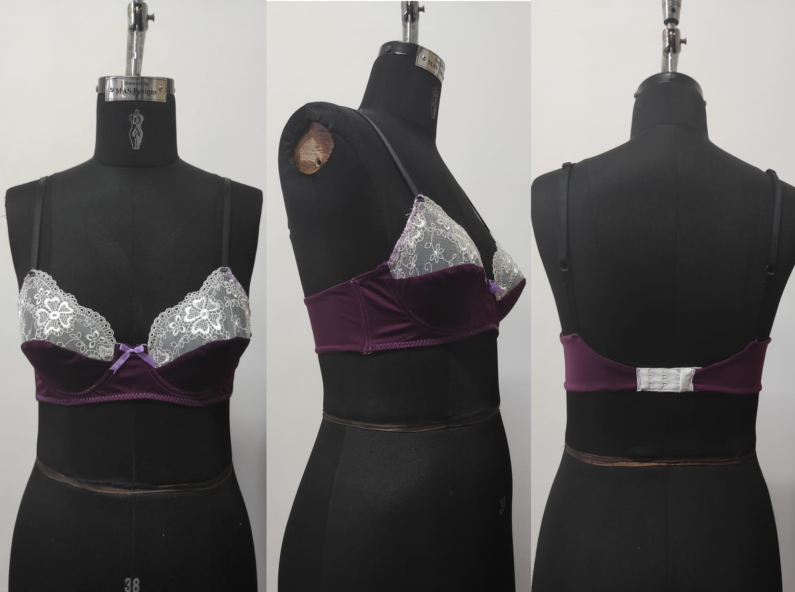

Featured Projects

Intimate Wear Development – Wired Bra
Mini Project | Pattern Technology
- Designed and developed a wired bra, focusing on technical drawings, fabric selection, construction methods, and fit evaluations.
- Identified critical operations, quality issues, and construction modifications to enhance fit, comfort, and performance.
- Conducted fit assessments and provided pattern adjustments to achieve production-ready quality.

Hydrophobic Finishes & Plasma Technology
Final Year Research Project
Investigated the impact of hydrophobic finishes on adhesive bonding of knitted fabrics and explored plasma technology.
- Analyzed key parameters affecting fabric bondability
- Tested seam strength and durability
- Developed recommendations for garment construction